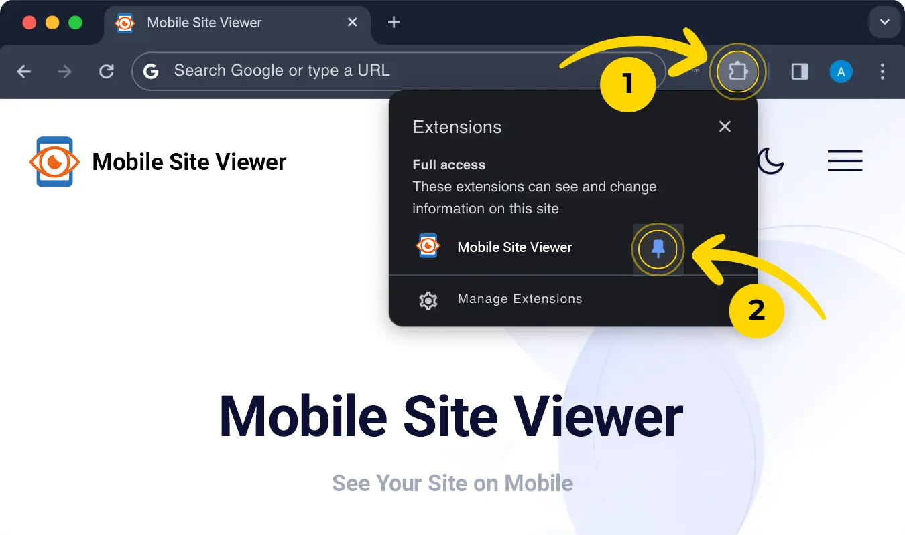
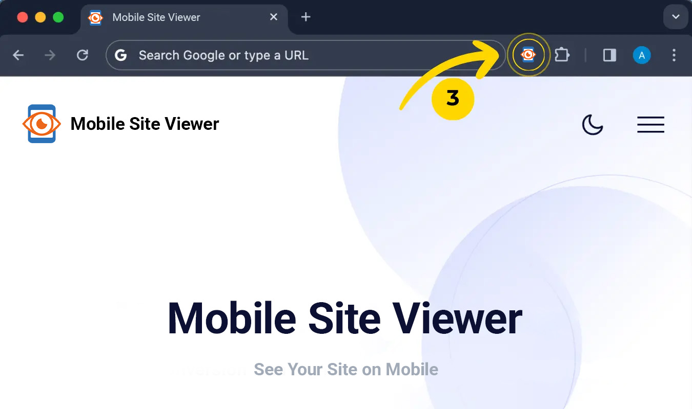

🎉 Now you have a great way to preview any site on mobile
1. Pin the extension for quick access to Mobile Site Viewer.

2. Simply click on the extension icon to open the mobile viewer.

1. Pin the extension for quick access to Mobile Site Viewer.

2. Simply click on the extension icon to open the mobile viewer.
